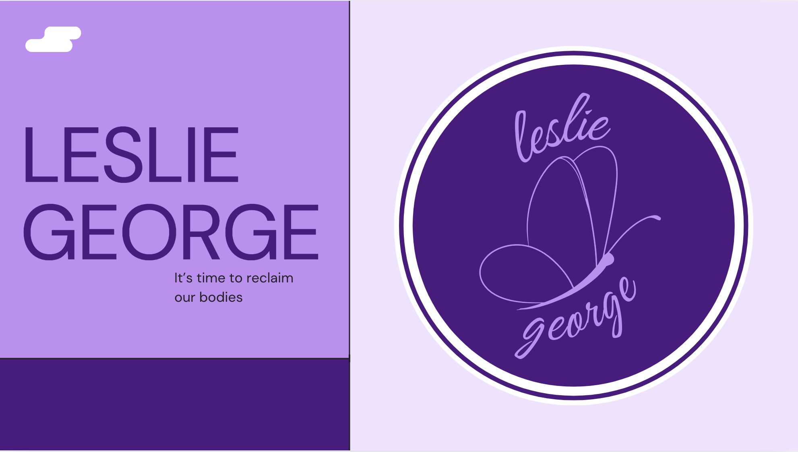

Featured Projects

Waterloo Social Campaign Fall 2024
Contributed to a lifestyle-focused social campaign highlighting Waterloo's connection to movement, wellness, outdoor recreation, and community. Assisted with wardrobe selection, shoot setup, prop styling, and Instagram-first content planning to create engaging, authentic brand storytelling.

Leslie George Philanthropy Brand Statement
This project involved the rebranding of our sorority’s local philanthropy event, the "Leslie George Speak Out", held in memory of our beloved sister Leslie, who passed away due to an eating disorder. The initiative aims to create a safe and supportive space for individuals—especially young women—to raise awareness, share personal stories, and speak openly about their struggles with body image and eating disorders. The rebrand focused on developing a strong visual identity, including a new logo, cohesive messaging, and promotional materials that reflect the mission of empowerment, remembrance, and education. This rebranding was quickly implemented into our social media pages and was successful in spreading awareness of not only the philanthropy but the event itself leading to the highest attendance rate here to date.

Game Day Apparel
Developed the creative strategy, campaign concept, and photoshoot plan for a local custom apparel brand. The goal was to showcase the products through authentic lifestyle imagery that emphasized community, personality, and brand identity rather than traditional product-focused photography.